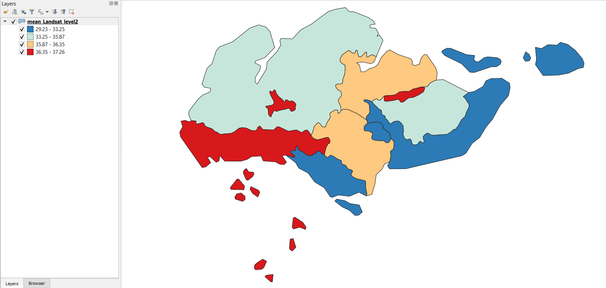

8 Week 8: Temperature and Policy
8.1 Learning Objectives
- Learn how to analyse temperature across urban areas along both spatial and time scales
8.2 Summary of Key Concepts
We first look at the causes of the Urban Heat Island Effect, its impacts, and then look at how it relates to global and local policies.
8.2.1 Causes of Urban Heat Island Effect
Urban areas are of higher temperatures, mainly due to 2 factors:
More dark surfaces that retain heat
Less vegetation cooling the environment
Other factors:
Low Sky View Factor
Air speed, cloud cover, cyclic solar radiation, building material and athropogenic energy

Source: (Skeptical Science, n.d.).
8.2.2 Costs of Urban Heat Island
Social
Heat-related excess mortality of 1344 people in Ahmedabad’s 2010 Heatwave (Azhar et al. 2014).
- Urban geometry can contribute to heat islands and intra-urban temperature differences (eg. up to 6 degree in Delhi) (Yadav and Sharma 2018).
Heat-associated deaths per year show an increasing trend in Phoenix, Arizona (Baker and Berisha 2021).
Environmental
- Positive feedback loop as more water and electricity will be consumed to cool residents in high temperatures, and this contributes to further temperature increases.
- 1°F increase in daily low temperatures associated with 290 gallons increase an average monthly usage of water for a typical single-family unit (Guhathakurta and Gober 2007).
- Peak electricity demand increases between 0.45 and 4.6% per degree of ambient temperature rise, corresponding to a penalty of about 21W per degree of temperature rise per person (Santamouris et al. 2015)
Economic
Melbourne has assessed the cost of Urban Heat Island effect specifically (Raalte et al. 2012)
- Estimated AUD$300 million cost, of which $282 million are health costs
UHI will result in GDP loss under different Green House Gas scenarios, however the specfic effects of UHI has been excluded in Global Climate Change (GCC) scenarios (Estrada, Botzen, and Tol 2017)
8.2.4 Policy Resources
8.2.4.1 Beat the Heat Handbook Case Studies
Superblocks
Medellin Green Corridors
Turn Down the Heat Strategy and Action Plan 2018 (Sydney)
Chicago 1995 Heatwave
8.2.4.2 Metropolitan UHI Reduction Strategies
London Plan
Singapore Master Plan
- Just a comment on the Open Space Provision by the Urban Redevelopment Authority requiring an open space plot at a rate of 4.05 sqm of open space for every 56sqm of gross floor area:
The provision applies to landed housing development clusters, which in practice take up very little space in Singapore owing to how uncommon they are.
A more representative guideline would be how new Housing Development Board (HDB) developments must have a surrounding area of greenery that is 4.5 times the built-up area. HDB policies are more representative of Singapore’s policies as 80% of Singaporeans live in HDB’s public housing developments and occupy much more space than landed housing development clusters in Singapore.
8.3 Summary of Practical Content
This week’s practical focuses on extracting temperature data from satellite data, and creating outputs that analyse it in spatial and time scales. For this practical, I focused on my home country Singapore, to understand spatial variations in temperature. I was unable to work on the Heat Index section of the practical due to time constraints, but will try to do so and update this learning diary with it in the future after assessment.
8.3.1 Methodology to extract temperature per spatial unit
Load spatial data
Load temperature datasets (MODIS, Landsat etc)
Collection
Filter for standard stuff (date range, area of interest, cloud cover)
Reduce the image
Median: ee.Reducer.mean()
or deciles: ee.Reducer.percentile([10, 20, 30, 40, 50, 60, 70, 80, 90])
Plot temperature timeseries
Zonal statistics
.reduceRegions() for Landsat data
ui.Chart.image.seriesByRegion() by lower level spatial data for MODIS data
Output shapefile
8.3.2 Temperature Outputs of Singapore
Firstly, we looked at the timeseries data of Singapore’s temperature, from February to September 2022.
The low temperature in May is surprising as it rarely gets that cold in Singapore, but might have been due to inter-monsoon conditions and intense rainfall then.
Practical outputs:

Analysis of Singapore’s temperature from Landsat, MODIS and spatial zones output
Comparing and reflecting the various outputs from this practical:
Similarities:
All outputs are similar in reflecting the high temperatures on the Western side of Singapore, which makes sense as the industrial areas are concentrated in the west, such as Tuas Industrial Estate and Jurong Island which houses Singapore’s petrochemical industries
The Landsat and MODIS outputs are similar in showing some higher temperatures in the Eastern side too, probably due to the presence of Changi Airport there.
The central area is cooler due to the presence of the Central Water Catchment which is an area containing several reservoirs and surrounded by nature reserves.
Differences:
The Landsat output appears more refined compared to the coarse MODIS output.
The spatial units in the zonal statistics output are arbitrarily drawn and this might be due to the use of the administrative boundaries found in GEE. As a Singaporean, these boundaries frankly do not even make any sense to me. I would redo this section with perhaps Singapore’s 2019 planning area boundaries.
Nonetheless. this was an interesting application of the content learnt in this remote sensing module to a place that is close to my heart. I would like to experiment with data of different spatial resolutions too. I could have tried with a different date range, such as covering the entirety of a year, as Singapore is less affected by seasonal differences as a equatorial tropical country.
Another way this could be applied is to flood risk or pollution. All these reflect a certain degree of physical/ environmental vulnerability, and perhaps could be combined with social vulnerability (i.e. socio-economic status) such as the Future Heat Events and Social Vulnerability 2018 Map made by the Geospatial Research, Analysis, and Services Program (GRASP) team under the Agency of Toxic Substances and Disease Registry (ATSDR) in the US.
8.4 Application of Key Concepts and Skills
The ability to use remotely sensed data for to map temperatures along spatio-temporal scales is very useful, and when combined with other remotely sensed data (e.g. Normalised Difference Moisture Index, Normalized Difference Water Index or urban structure/ landcover) or socio-economic data such health incidents or census data. The following studies are all various applications of remotely-sensed temperature data, combined with various data sources to produce some sort of heat vulnerability map (Méndez-Lázaro et al. 2018; Meftahi et al. 2022; Lee and Brown 2022; Räsänen et al. 2019). They all use Landsat 8 Band 10 Thermal Infrared as temperature inputs in their research. (Méndez-Lázaro et al. 2018) are of interest as they combine the temperature data with variables from census data to illustrate social vulnerability to heat, and ultimately produce the following Heat Vulnerability Index map of San Juan, Puerto Rico:
Lee and Brown’s work (2022) are also interesting as they combine temperature data with vector data on heat-related incidents, as well as socio-economic variables from census data. They found that the negative effects of thermal environments on human health were higher in areas with a high percentage of impervious surface, population over 65 years, non-white people, no high-school diploma or unemployment. These results can then be used for implementing targeted local intervention efforts at vulnerable areas and groups.
In view of climate change and how heatwaves during summer seasons can be more intense now and in the future, more cities should embark on similar studies of vulnerability, combining temperature data from Landsat 8 images with socio-economic data to assess the vulnerability of local areas and communities to heat-related illnesses or deaths. This allows local government to provide targeted resources for those who need it most.
8.5 Reflections
This week’s practical on extracting temperature data in GEE has been useful in seeing how we can do so practically, which is an extension of what we know remote sensing is capable of. It is eye-opening to see it in practice.
We have also built on what we saw in week 4 regarding policy and how the various groups in the module suggested using remotely sensed data for various policy applications, to see how what we’ve learnt in this module can be applied in policymaking. All this is certainly very exciting from a policymaking perspective, that so many new sources of data can be harnessed to improve the knowledge base for policymaking and bring real benefits to citizens all over the world.
However, a real concern is the capability of municipal governments globally to harness the potential of remotely sensed data. Not all local governments have a GIS analyst, much less a GIS team to carry out such analyses. One suggestion is that practicals and methodologies to reproduce such heat vulnerability maps (or other vulnerability maps in relation to environmental hazards like pollution) can be openly available on the Internet, using openly available software and data so as to lower the barriers of entry for this field. This can allow more cities to fully utilise the data available to them for the benefit of residents.